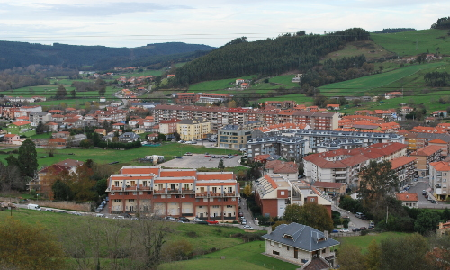

|

Etimología:
En el siglo X aparece como Ranedo, derivado clarísimo de rana, de tal manera que se traduciría por un "lugar en que abundan las ranas" lo cual se explicaría por las condiciones físicas del núcleo dispuesto al borde del río Pas y un área deprimida donde las acumulaciones de agua y la humedad facilita la presencia de estos anfibios.
Acceso:
A 20 Km de Santander, su acceso se puede realizar desde la N-623 (Carretera Burgos-Santander) punto kilométrico 132 (dirección Santander) o desde el Km 135 (dirección Burgos). La carretera atraviesa el núcleo.
Organización:
A mediados del siglo XIX señala P. Madoz "tiene 120 casas distribuidas en los barrios de Rucabado, El Campo, Surribero y las Cuartas". El núcleo primigenio estaba organizado en pequeños barrios que se han ido compactando y ampliando dando lugar a un núcleo denso con una pequeña reserva central de praderío. Las redes de comunicación, N-623 y el ferrocarril de la RENFE han determinado y organizado un núcleo en forma de "Y" cuyo punto de intersección es el barrio de la Estación, que se continua con la Avenida Luis de la Concha, principal eje vertebrador de Renedo, en la cual el proceso de sustitución de edificios aislados por bloques en altura ha sido extraordinariamente rápido en las últimas décadas.
El crecimiento en la actualidad sigue la dirección de la red viaria, la N-623 (dirección Burgos) y de la carretera comarcal CA-233 (Quijano).
Descripción:
Es la capital del municipio, hecho que le ha posicionado como el centro de servicios con la presencia de los centros de enseñanza y salud y de las demás instituciones sociales, como el ayuntamiento.
La presencia de la central lechera KAIKU ha facilitado un desarrollo con caracteres más urbanos que los demás pueblos del municipio, consolidándose paralelamente como centro comercial de la comarca. Se asienta en una terraza cuartenaria diseñada por el río Pas que ocupa el valle labrado sobre materiales del cretácico inferior. Esta área de vega, esta cerrado por pequeñas elevaciones como el Cueto, la Lastra que lo circundan y encajonan, abriéndose en dos brazos siguiendo la dirección de la N-623 y la CA-233.
El río Pas entra por el W, regando la amplia llanura, a la vez que le separa del pueblo de Vioño, y poco antes de entrar en Quijano recibe las aguas del Carrimont después de atravesar todo el núcleo. El núcleo aparece rodeado por prados de siega, no olvidemos su condición ganadera, que son sustituidos por plantaciones de eucalipto en las áreas más altas, reservándose solamente las áreas de vaguada a hileras de robles, avellanos, fresnos...
|
Sitios a visitar
- Vioño de Pielagos
- Virgen de valencia
- El picón
|